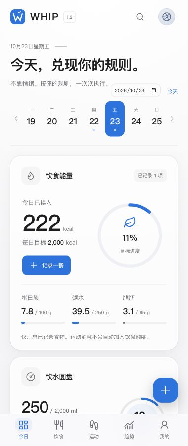

CREDIT RISK / FINANCIAL ANALYTICS
Interactive researchCredit Risk Decision Lab
信用风险与决策分析
基于台湾信用卡历史数据建立随机森林模型，并以交互式工作台呈现违约概率、阈值权衡与审查容量。读者可以调整合成账户情景，或探索测试集中不同审查比例下的历史违约覆盖情况。
30,000历史账户
0.7741测试集 ROC-AUC
31.27%审查前 10% 的违约覆盖率
从信用风险研究、个人财务到专业探索与日常工具，记录六个项目如何把信息转化为可操作的体验。
信用风险与决策分析
基于台湾信用卡历史数据建立随机森林模型，并以交互式工作台呈现违约概率、阈值权衡与审查容量。读者可以调整合成账户情景，或探索测试集中不同审查比例下的历史违约覆盖情况。
为个人财务整理设计的交互原型，将多账户资产、配置占比与盈亏放进同一工作台。用户可以切换市值、成本与浮盈，点击资产圆环查看账户构成；案例展示了图形交互与浏览器本地存储的设计取舍。

围绕饮食、饮水、运动、睡眠与身体状态的日常记录，组织今日概览、录入和趋势回看。应用采用本地优先设计；案例进一步介绍 IndexedDB、离线缓存以及数据备份与恢复的边界。
面向工业工具的产品展示与询价门户。按材料、规格和系列组织目录，帮助访客浏览产品、整理意向清单并进入询盘流程。
查看项目围绕文献检索需求设计的双端服务原型。客户可提交 DOI 或关键词并查看计价，管理端集中处理请求与工单。
查看项目面向江苏考生的交互式探索原型，将专业、职业方向、高校志愿查询和企业岗位信息放在一个界面中，帮助用户比较不同选择。
原型中的信息和结论需核对来源、准确性与时效，不能替代正式咨询或录取信息。